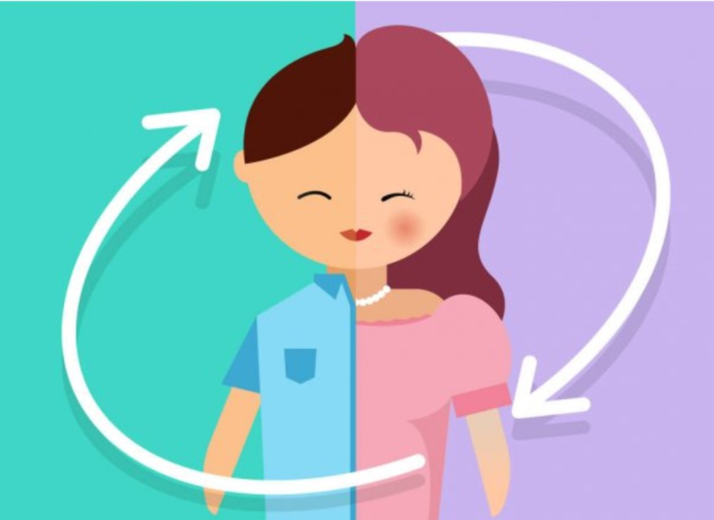

LA TRANSEXUALIDAD CONTEMPORANEA
La transexualidad es una discordancia que tiene una persona entre su sexo biológico (genitales), su sexo genético (XX o XY) y su sexo cerebral (el que la persona se sienta hombre o mujer), situación que afecta su identidad sexual. Afortunadamente la psiquiatría ya no la considera una enfermedad mental, pero aún persiste rechazo social, desconocimiento y violencia hacia las personas transexuales.
Con respecto a su origen se han realizado distintos estudios enfocado en diferentes áreas de la medicina y se llegan a diferentes conclusiones, la más certera es que aunque las neurociencias o la genética hallaran una respuesta biológica sobre el origen de la transexualidad, está resultaría insuficiente para dar cuenta de la complejidad de dicha condición, pues cada persona se desarrolla en un contexto social distinto.
DIVERSIDAD TRANS
(Diferencias que hay que conocer cuando se habla de la comunidad trans)
Travesti
Son personas que adoptan prendas, accesorios y expresiones que culturalmente están asociadas con el otro sexo. Puede ser con fines lúdicos o como una exploración del otro sexo.
Transgénero
Se auto identifican como hombres o mujeres, pero este sexo no corresponde con el que se les asignó al nacer de acuerdo con las características físicas de sus órganos sexuales.
Transexual
Ellos buscan cambiar o han cambiado médicamente —mediante terapias hormonales o cirugía— sus características sexuales para feminizarse o masculinizarse.
LOS TRANSEXUALES ENFRENTAN VIOLACIONES A SUS DERECHOS HUMANOS Y CONSTANTES ATAQUES ENDIVERSOS ÁMBITOS DE SU VIDA COMO:
- Sanitarios: Las personas transexuales son obligadas a usar los baños del sexo con el que no se identifican, exponiéndolas a la violación de sus derechos.
- Empleos: Además de la dificultad para encontrar puestos más allá de los estereotipos sociales, un alto porcentaje de transgénero sufre de acoso, discriminación y maltrato en el trabajo.
- De reconocimiento: En muchos lugares faltan leyes que garanticen que una persona trans pueda migrar sus logros laborales o académicos a su nueva identidad.
- Relacionado a la voz: Muchas personas requieren terapia de voz para que esta sea congruente con su identidad. Además de los cambios que producen las hormonas algunos requieren la ayuda de un foniatra.
Es vital para este grupo de personas una tarapia integral que incluya los aspectos médico-endocrinológico, psicológico y sexual, ya que de otra manera son muy propensos a las siguientes manifestaciones clínicas y afecciones emocionales:
- Angustia
- Ansiedad
- Baja autoestima
- Casos en que intentan mutilarse los genitales
- Administrarse hormonas sin vigilancia médica